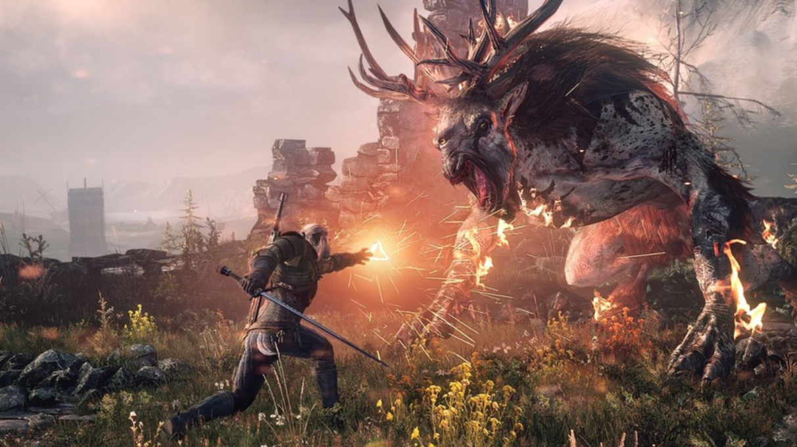
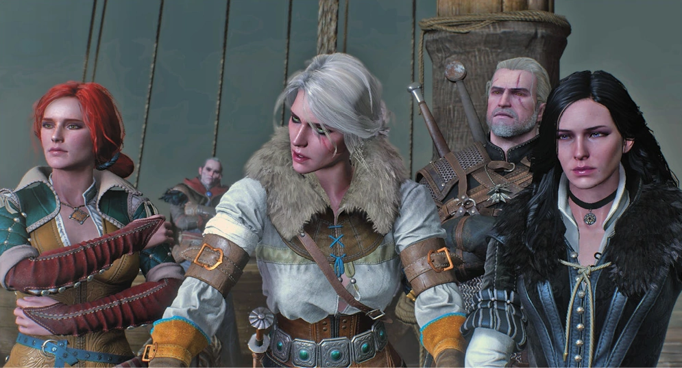

Daha önce hiç The Witcher oynamadıysanız bile bu oyunu oynayın. Skyrim’den beri kendinizi bırakacak devasa bir oyun evreni arıyorsanız bu oyunu oynayın. RPG, FPS, strateji… Fark etmez. Hangi türü seviyor olursanız olun bu oyunu oynayın. “Grafiklere önem veririm!” diyorsanız bu oyunu oynayın ve muhteşem manzaraların tadını çıkartın. “Önemli olan oynanıştır!” diyorsanız yine oynayın, dağ, tepe, ırmak, ova gezip Nekker avlayın. “Kurgu ve hikaye olmazsa olmaz!” tarafındaysanız düşünmeden alın. Oyun dünyasının en muhteşem kurgularından birine kendinizi bırakın. Oyun oynamayı sevmiyorsanız, yine oynayın, çünkü her güzel şeyin bir başlangıcı vardır.
Her şeyden önce The Witcher 3 insanın içine işleyen bir CD Projekt destanı. Muhteşem ezgilerle bezenmiş müziklerinden tutun da her bir parçası incelikle oluşturulmuş görevlerine kadar emek kokuyor. Hani bu öyle bir emek ki kendimi uzun zaman sonra Tamriel topraklarına yakın bir yerde hissedebildim. Zaten önceki oyunlarda da inanılmaz güzel olan görev ekranındaki yazılar, The Witcher 3’te de kendini belli ediyor. En ufak takip görevinden, hayalet avına kadar her bir görevin inanılmaz bir arka plan hikayesi var. Tamam, önceki oyunlarda da öyleydi, kabul ettim de bir sorun var: The Witcher 2’in toplam görev sayısı muhtemelen üçüncü oyunun ilk iki bölgesinde geçiliyor. Öyle bir bolluk, bereket var.
Geralt’ın oyunun fragmanında havalı bir şekilde söylediği “Dünyanın bir kahramana ihtiyacı yok, bir profesyonele ihtiyacı var.” repliği her seferinde en acımasız şekilde önümüze sunuluyor. Hele “Ben ana hikayeden devam edeyim, kurguyu hiç dağıtmayayım diyorsanız” The Witcher 3 sizi tokat manyağı yapıyor. Gururunuz ve eşyalarınızı tamir etmenize yarayacak altın arasında birçok kez karar vermek zorunda kalacaksınız.